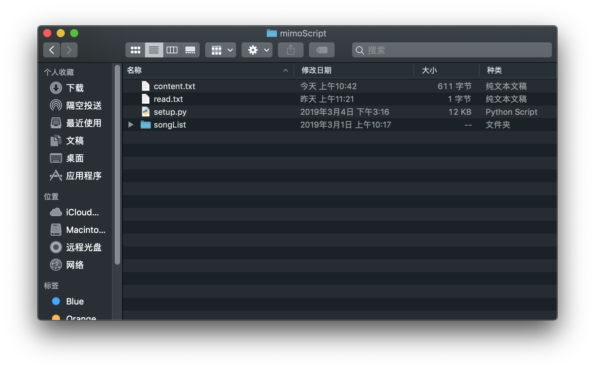
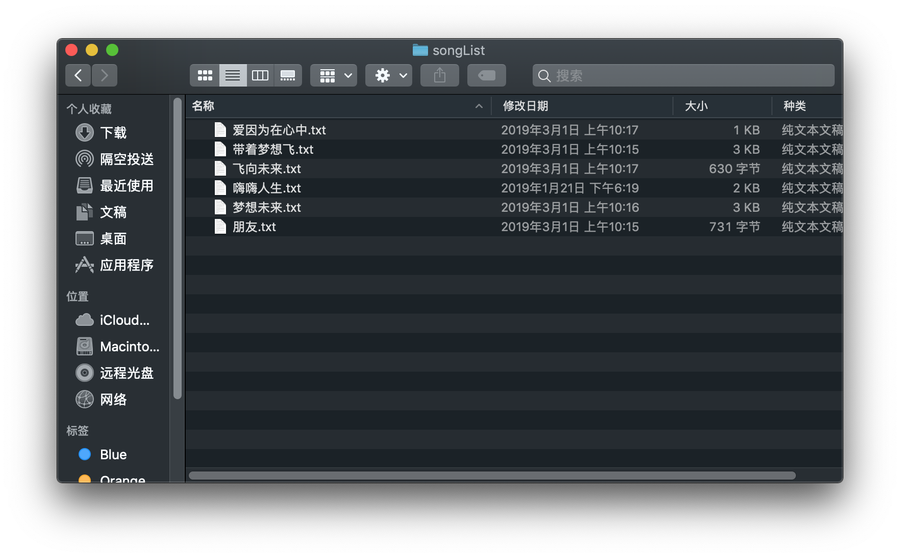
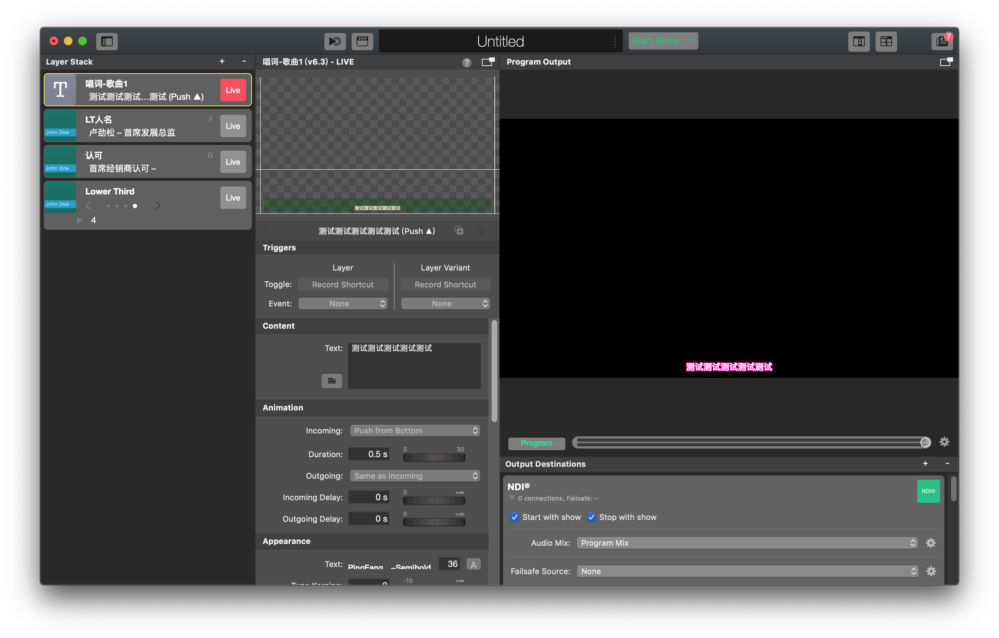
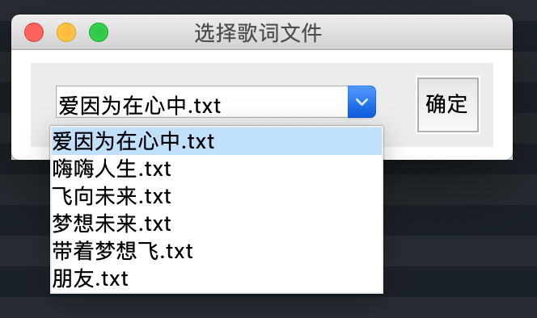
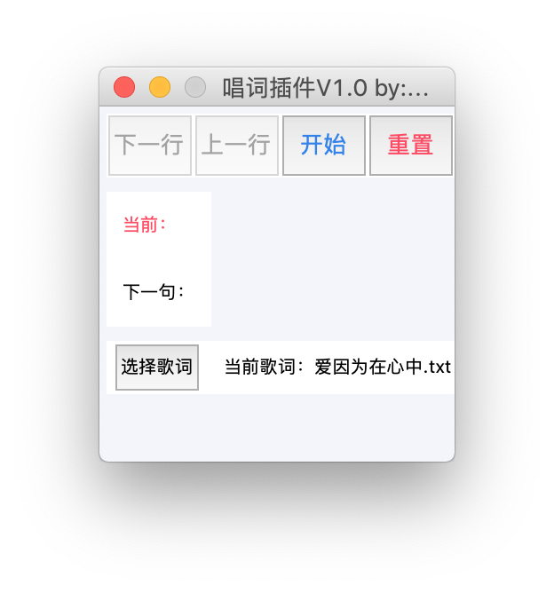
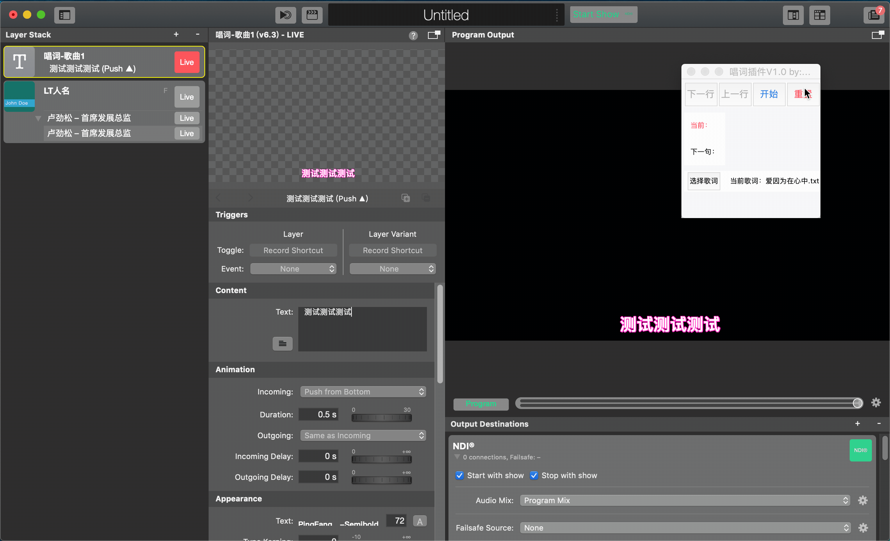

使用方法
使用前请先阅读 5.3 注意事项
文件含义

- content.txt — 当前载入的歌曲文件（不需要用户改动）
- read.txt — 当前读取行歌词（不需要用户改动）
- setup.py — 插件主程序
- songList文件夹 — 歌词保存文件夹
songList文件夹

将所有歌词文档存放在此目录下： /mimoScript/songList。文件格式为.txt。
注意：所有的txt文档必须是utf-8格式编码。这意味着，一定不要使用Windows自带的文本编辑器来生成这些歌词文档，使用MacOS自带的文本编辑器或其他高级文本编辑器来编辑和修改这些文档。
创建mimoLive歌词图层并配置样式
打开mimoLive，创建新的Text Layer，并配置样式（大小、位置、描边、颜色等）。详见 2.1 唱词。只需要添加一个图层，不需要添加额外Variant。如下图：

插件选择歌词
打开插件，点击选择歌词，在弹出的窗口中选择，选中的歌词名称会在插件主界面显示：


播放控制
- 点击"重置"按钮将内容清空
- 点击mimoLive中"Live"输出该图层
- 点击"开始"按钮加载选中歌词的第一行
- 点击"下一行"或"上一行"按钮进行切换控制
- 完成后再次点击"重置"清空
过程如下：

快捷键
下一行：Space
上一行：P